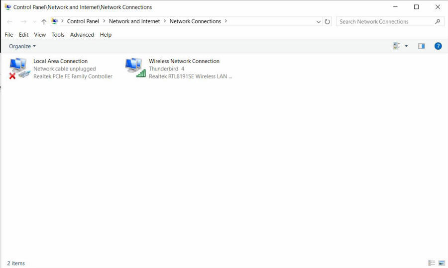
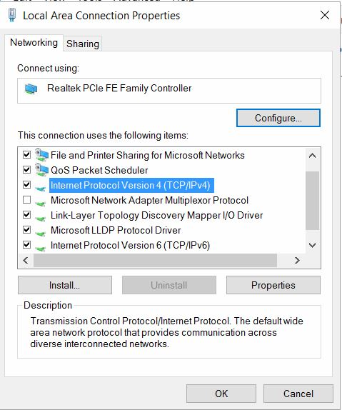
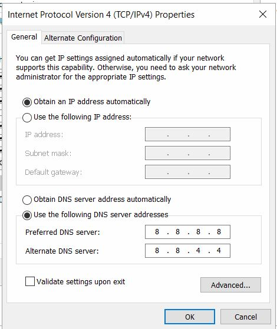
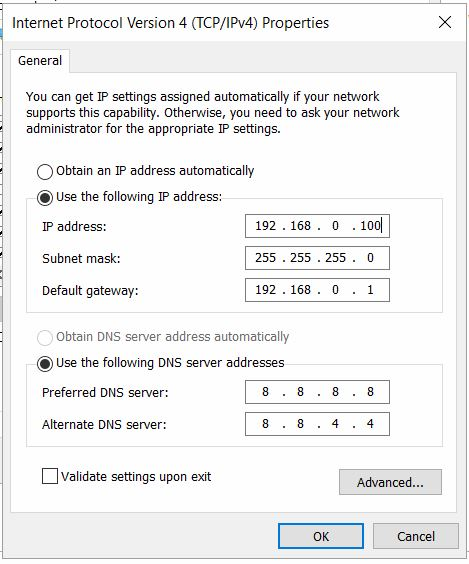
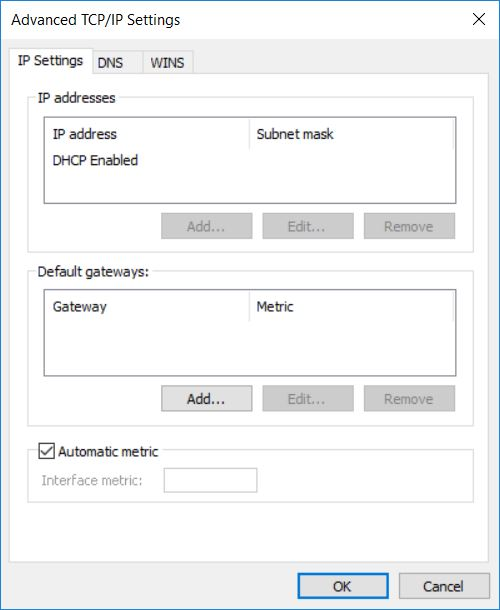
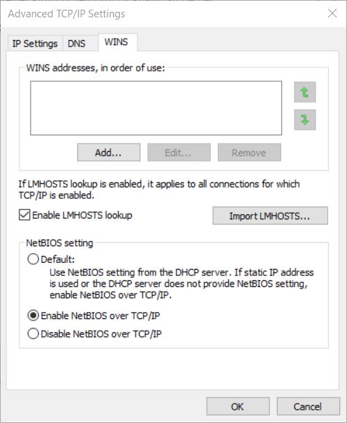

Fig 3
Fig 3
-
Right Mouse Click in the one that says "Local Area Connection."
You should see this:

Fig 4 -
Select the "Properties" setting. This should come up:

Fig 5 -
Move the mouse down to the "Internet Protocol 4 (TCP/IPv4) and
select "Properties" at the bottom of the drop drown box. This
window should open:

Fig 6 -
Select the circle Left of "Use the following IP address" where the
page should change to this (except the Items will be not filled in.)

Fig 7
Fig 8
-
I suggest that you fill in the default IP address with 19.1.68.0.100
Note it cannot be any address that you presently use on your
network. It also should not be the 192.168.0.111 that is on
the hand controller. Every device on a network has to have
it's own unique address.
-
Fill the subnet mask in with 255.255.255.0
-
Now fill the default gateway in with 192.168.0.1 Note this
should be the base address of your network. If you base
address is 192.168.0.1 then that is what you will use. If you network
uses something like 192.168.1.1 then use that. Also change the
IP address to match such as 192.168.1.100.
-
The Gemini-2 Default gateway address is going to have to match the
one in step 13. The Gemini-2 IP address will also have to be
in the same network. If the gateway is 192.168.1.1 then make
the Gemini-2 IP address 192.168.1.111 for instant.
-
You are going to want to make sure Netbios is working on your network.
-
Click the Advanced Box (see fig 7 above.) The below menu should come
up.

Fig 9 -
Now click on the WINS tab.
The below menu should come up.

Fig 10
-
Now you have two choices here. If the Default box is
checked, and http://gemini/ will
not bring up the Web Interface. Then Click the "Enable NetBios
over TCP/IP" check box. It the link works then leave the
setting at default. Hit the OK button and close out of
each window in turn.
This ends the Windows 10 configuration.